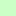
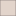

<!doctype html>
<html lang="en">
    <head>
        <meta charset="utf-8">
        <meta http-equiv="X-UA-Compatible" content="IE=edge">
        <meta name="viewport" content="initial-scale=1,user-scalable=no,maximum-scale=1,width=device-width">
        <meta name="mobile-web-app-capable" content="yes">
        <meta name="apple-mobile-web-app-capable" content="yes">
        <link rel="stylesheet" href="css/leaflet.css"><link rel="stylesheet" href="css/L.Control.Locate.min.css">
        <link rel="stylesheet" href="css/qgis2web.css"><link rel="stylesheet" href="css/fontawesome-all.min.css">
        <link rel="stylesheet" href="css/leaflet-control-geocoder.Geocoder.css">
        <link rel="stylesheet" href="css/leaflet-measure.css">
        <style>
        html, body, #map {
            width: 100%;
            height: 100%;
            padding: 0;
            margin: 0;
        }
        </style>
        <title></title>
    </head>
    <body>
        <div id="map">
        </div>
        <script src="js/qgis2web_expressions.js"></script>
        <script src="js/leaflet.js"></script><script src="js/L.Control.Locate.min.js"></script>
        <script src="js/leaflet-svg-shape-markers.min.js"></script>
        <script src="js/leaflet.rotatedMarker.js"></script>
        <script src="js/leaflet.pattern.js"></script>
        <script src="js/leaflet-hash.js"></script>
        <script src="js/Autolinker.min.js"></script>
        <script src="js/rbush.min.js"></script>
        <script src="js/labelgun.min.js"></script>
        <script src="js/labels.js"></script>
        <script src="js/leaflet-control-geocoder.Geocoder.js"></script>
        <script src="js/leaflet-measure.js"></script>
        <script src="data/BatasAdministrasi_1.js"></script>
        <script src="data/Jangkauan1200m_2.js"></script>
        <script src="data/Jangkauan800m_3.js"></script>
        <script src="data/Jangkauan400m_4.js"></script>
        <script src="data/JaringanJalan_5.js"></script>
        <script src="data/PerdagangandanJasa_6.js"></script>
        <script src="data/ITS_7.js"></script>
        <script>
        var highlightLayer;
        function highlightFeature(e) {
            highlightLayer = e.target;

            if (e.target.feature.geometry.type === 'LineString') {
              highlightLayer.setStyle({
                color: '#ffff00',
              });
            } else {
              highlightLayer.setStyle({
                fillColor: '#ffff00',
                fillOpacity: 1
              });
            }
        }
        var map = L.map('map', {
            zoomControl:true, maxZoom:28, minZoom:1
        }).fitBounds([[-7.289504019306261,112.78498608467434],[-7.272888824769555,112.81301843645161]]);
        var hash = new L.Hash(map);
        map.attributionControl.setPrefix('<a href="https://github.com/tomchadwin/qgis2web" target="_blank">qgis2web</a> &middot; <a href="https://leafletjs.com" title="A JS library for interactive maps">Leaflet</a> &middot; <a href="https://qgis.org">QGIS</a>');
        var autolinker = new Autolinker({truncate: {length: 30, location: 'smart'}});
        L.control.locate({locateOptions: {maxZoom: 19}}).addTo(map);
        var measureControl = new L.Control.Measure({
            position: 'topleft',
            primaryLengthUnit: 'meters',
            secondaryLengthUnit: 'kilometers',
            primaryAreaUnit: 'sqmeters',
            secondaryAreaUnit: 'hectares'
        });
        measureControl.addTo(map);
        document.getElementsByClassName('leaflet-control-measure-toggle')[0]
        .innerHTML = '';
        document.getElementsByClassName('leaflet-control-measure-toggle')[0]
        .className += ' fas fa-ruler';
        var bounds_group = new L.featureGroup([]);
        function setBounds() {
        }
        map.createPane('pane_OpenStreetMap_0');
        map.getPane('pane_OpenStreetMap_0').style.zIndex = 400;
        var layer_OpenStreetMap_0 = L.tileLayer('https://tile.openstreetmap.org/{z}/{x}/{y}.png', {
            pane: 'pane_OpenStreetMap_0',
            opacity: 1.0,
            attribution: '',
            minZoom: 1,
            maxZoom: 28,
            minNativeZoom: 0,
            maxNativeZoom: 19
        });
        layer_OpenStreetMap_0;
        map.addLayer(layer_OpenStreetMap_0);
        function pop_BatasAdministrasi_1(feature, layer) {
            layer.on({
                mouseout: function(e) {
                    for (i in e.target._eventParents) {
                        e.target._eventParents[i].resetStyle(e.target);
                    }
                },
                mouseover: highlightFeature,
            });
            var popupContent = '<table>\
                    <tr>\
                        <td colspan="2">' + (feature.properties['fid'] !== null ? autolinker.link(feature.properties['fid'].toLocaleString()) : '') + '</td>\
                    </tr>\
                    <tr>\
                        <td colspan="2">' + (feature.properties['FID_Batas_'] !== null ? autolinker.link(feature.properties['FID_Batas_'].toLocaleString()) : '') + '</td>\
                    </tr>\
                    <tr>\
                        <td colspan="2">' + (feature.properties['WADMKC'] !== null ? autolinker.link(feature.properties['WADMKC'].toLocaleString()) : '') + '</td>\
                    </tr>\
                    <tr>\
                        <td colspan="2">' + (feature.properties['Shape_Area'] !== null ? autolinker.link(feature.properties['Shape_Area'].toLocaleString()) : '') + '</td>\
                    </tr>\
                    <tr>\
                        <td colspan="2">' + (feature.properties['UP'] !== null ? autolinker.link(feature.properties['UP'].toLocaleString()) : '') + '</td>\
                    </tr>\
                </table>';
            layer.bindPopup(popupContent, {maxHeight: 400});
        }

        function style_BatasAdministrasi_1_0() {
            return {
                pane: 'pane_BatasAdministrasi_1',
                opacity: 1,
                color: 'rgba(35,35,35,1.0)',
                dashArray: '',
                lineCap: 'butt',
                lineJoin: 'miter',
                weight: 1.0, 
                fill: true,
                fillOpacity: 1,
                fillColor: 'rgba(164,113,88,1.0)',
                interactive: true,
            }
        }
        map.createPane('pane_BatasAdministrasi_1');
        map.getPane('pane_BatasAdministrasi_1').style.zIndex = 401;
        map.getPane('pane_BatasAdministrasi_1').style['mix-blend-mode'] = 'normal';
        var layer_BatasAdministrasi_1 = new L.geoJson(json_BatasAdministrasi_1, {
            attribution: '',
            interactive: true,
            dataVar: 'json_BatasAdministrasi_1',
            layerName: 'layer_BatasAdministrasi_1',
            pane: 'pane_BatasAdministrasi_1',
            onEachFeature: pop_BatasAdministrasi_1,
            style: style_BatasAdministrasi_1_0,
        });
        bounds_group.addLayer(layer_BatasAdministrasi_1);
        map.addLayer(layer_BatasAdministrasi_1);
        function pop_Jangkauan1200m_2(feature, layer) {
            layer.on({
                mouseout: function(e) {
                    for (i in e.target._eventParents) {
                        e.target._eventParents[i].resetStyle(e.target);
                    }
                },
                mouseover: highlightFeature,
            });
        }

        function style_Jangkauan1200m_2_0() {
            return {
                pane: 'pane_Jangkauan1200m_2',
                stroke: false, 
                fill: true,
                fillOpacity: 1,
                fillColor: 'rgba(203,255,198,1.0)',
                interactive: true,
            }
        }
        map.createPane('pane_Jangkauan1200m_2');
        map.getPane('pane_Jangkauan1200m_2').style.zIndex = 402;
        map.getPane('pane_Jangkauan1200m_2').style['mix-blend-mode'] = 'normal';
        var layer_Jangkauan1200m_2 = new L.geoJson(json_Jangkauan1200m_2, {
            attribution: '',
            interactive: true,
            dataVar: 'json_Jangkauan1200m_2',
            layerName: 'layer_Jangkauan1200m_2',
            pane: 'pane_Jangkauan1200m_2',
            onEachFeature: pop_Jangkauan1200m_2,
            style: style_Jangkauan1200m_2_0,
        });
        bounds_group.addLayer(layer_Jangkauan1200m_2);
        map.addLayer(layer_Jangkauan1200m_2);
        function pop_Jangkauan800m_3(feature, layer) {
            layer.on({
                mouseout: function(e) {
                    for (i in e.target._eventParents) {
                        e.target._eventParents[i].resetStyle(e.target);
                    }
                },
                mouseover: highlightFeature,
            });
        }

        function style_Jangkauan800m_3_0() {
            return {
                pane: 'pane_Jangkauan800m_3',
                stroke: false, 
                fill: true,
                fillOpacity: 1,
                fillColor: 'rgba(97,199,150,1.0)',
                interactive: true,
            }
        }
        map.createPane('pane_Jangkauan800m_3');
        map.getPane('pane_Jangkauan800m_3').style.zIndex = 403;
        map.getPane('pane_Jangkauan800m_3').style['mix-blend-mode'] = 'normal';
        var layer_Jangkauan800m_3 = new L.geoJson(json_Jangkauan800m_3, {
            attribution: '',
            interactive: true,
            dataVar: 'json_Jangkauan800m_3',
            layerName: 'layer_Jangkauan800m_3',
            pane: 'pane_Jangkauan800m_3',
            onEachFeature: pop_Jangkauan800m_3,
            style: style_Jangkauan800m_3_0,
        });
        bounds_group.addLayer(layer_Jangkauan800m_3);
        map.addLayer(layer_Jangkauan800m_3);
        function pop_Jangkauan400m_4(feature, layer) {
            layer.on({
                mouseout: function(e) {
                    for (i in e.target._eventParents) {
                        e.target._eventParents[i].resetStyle(e.target);
                    }
                },
                mouseover: highlightFeature,
            });
        }

        function style_Jangkauan400m_4_0() {
            return {
                pane: 'pane_Jangkauan400m_4',
                stroke: false, 
                fill: true,
                fillOpacity: 1,
                fillColor: 'rgba(28,124,45,1.0)',
                interactive: true,
            }
        }
        map.createPane('pane_Jangkauan400m_4');
        map.getPane('pane_Jangkauan400m_4').style.zIndex = 404;
        map.getPane('pane_Jangkauan400m_4').style['mix-blend-mode'] = 'normal';
        var layer_Jangkauan400m_4 = new L.geoJson(json_Jangkauan400m_4, {
            attribution: '',
            interactive: true,
            dataVar: 'json_Jangkauan400m_4',
            layerName: 'layer_Jangkauan400m_4',
            pane: 'pane_Jangkauan400m_4',
            onEachFeature: pop_Jangkauan400m_4,
            style: style_Jangkauan400m_4_0,
        });
        bounds_group.addLayer(layer_Jangkauan400m_4);
        map.addLayer(layer_Jangkauan400m_4);
        function pop_JaringanJalan_5(feature, layer) {
            layer.on({
                mouseout: function(e) {
                    for (i in e.target._eventParents) {
                        e.target._eventParents[i].resetStyle(e.target);
                    }
                },
                mouseover: highlightFeature,
            });
        }

        function style_JaringanJalan_5_0() {
            return {
                pane: 'pane_JaringanJalan_5',
                opacity: 1,
                color: 'rgba(231,113,72,1.0)',
                dashArray: '',
                lineCap: 'square',
                lineJoin: 'bevel',
                weight: 1.0,
                fillOpacity: 0,
                interactive: true,
            }
        }
        map.createPane('pane_JaringanJalan_5');
        map.getPane('pane_JaringanJalan_5').style.zIndex = 405;
        map.getPane('pane_JaringanJalan_5').style['mix-blend-mode'] = 'normal';
        var layer_JaringanJalan_5 = new L.geoJson(json_JaringanJalan_5, {
            attribution: '',
            interactive: true,
            dataVar: 'json_JaringanJalan_5',
            layerName: 'layer_JaringanJalan_5',
            pane: 'pane_JaringanJalan_5',
            onEachFeature: pop_JaringanJalan_5,
            style: style_JaringanJalan_5_0,
        });
        bounds_group.addLayer(layer_JaringanJalan_5);
        map.addLayer(layer_JaringanJalan_5);
        function pop_PerdagangandanJasa_6(feature, layer) {
            layer.on({
                mouseout: function(e) {
                    for (i in e.target._eventParents) {
                        e.target._eventParents[i].resetStyle(e.target);
                    }
                },
                mouseover: highlightFeature,
            });
            var popupContent = '<table>\
                    <tr>\
                        <td colspan="2"><strong>Perdagangan dan Jasa</strong><br />' + (feature.properties['PerddanJas'] !== null ? autolinker.link(feature.properties['PerddanJas'].toLocaleString()) : '') + '</td>\
                    </tr>\
                    <tr>\
                        <td colspan="2"><strong>Jangkauan terhadap ITS</strong><br />' + (feature.properties['Jangkauan'] !== null ? autolinker.link(feature.properties['Jangkauan'].toLocaleString()) : '') + '</td>\
                    </tr>\
                    <tr>\
                        <td colspan="2"><strong>Alamat</strong><br />' + (feature.properties['Alamat'] !== null ? autolinker.link(feature.properties['Alamat'].toLocaleString()) : '') + '</td>\
                    </tr>\
                </table>';
            layer.bindPopup(popupContent, {maxHeight: 400});
        }

        function style_PerdagangandanJasa_6_0() {
            return {
                pane: 'pane_PerdagangandanJasa_6',
                radius: 7.6,
                opacity: 1,
                color: 'rgba(0,41,84,1.0)',
                dashArray: '',
                lineCap: 'butt',
                lineJoin: 'miter',
                weight: 3.0,
                fill: true,
                fillOpacity: 1,
                fillColor: 'rgba(72,123,182,1.0)',
                interactive: true,
            }
        }
        map.createPane('pane_PerdagangandanJasa_6');
        map.getPane('pane_PerdagangandanJasa_6').style.zIndex = 406;
        map.getPane('pane_PerdagangandanJasa_6').style['mix-blend-mode'] = 'normal';
        var layer_PerdagangandanJasa_6 = new L.geoJson(json_PerdagangandanJasa_6, {
            attribution: '',
            interactive: true,
            dataVar: 'json_PerdagangandanJasa_6',
            layerName: 'layer_PerdagangandanJasa_6',
            pane: 'pane_PerdagangandanJasa_6',
            onEachFeature: pop_PerdagangandanJasa_6,
            pointToLayer: function (feature, latlng) {
                var context = {
                    feature: feature,
                    variables: {}
                };
                return L.circleMarker(latlng, style_PerdagangandanJasa_6_0(feature));
            },
        });
        bounds_group.addLayer(layer_PerdagangandanJasa_6);
        map.addLayer(layer_PerdagangandanJasa_6);
        function pop_ITS_7(feature, layer) {
            layer.on({
                mouseout: function(e) {
                    for (i in e.target._eventParents) {
                        e.target._eventParents[i].resetStyle(e.target);
                    }
                },
                mouseover: highlightFeature,
            });
            var popupContent = '<table>\
                    <tr>\
                        <td colspan="2"><strong>Institut</strong><br />' + (feature.properties['ITS'] !== null ? autolinker.link(feature.properties['ITS'].toLocaleString()) : '') + '</td>\
                    </tr>\
                    <tr>\
                        <td colspan="2"><strong>Alamat</strong><br />' + (feature.properties['Alamat'] !== null ? autolinker.link(feature.properties['Alamat'].toLocaleString()) : '') + '</td>\
                    </tr>\
                    <tr>\
                        <td colspan="2"><strong>Keterjangkauan Perdagangan dan Jasa 800m</strong><br />' + (feature.properties['800m'] !== null ? autolinker.link(feature.properties['800m'].toLocaleString()) : '') + '</td>\
                    </tr>\
                    <tr>\
                        <td colspan="2"><strong>Keterjangkauan Perdagangan dan Jasa 1200m</strong><br />' + (feature.properties['1200m'] !== null ? autolinker.link(feature.properties['1200m'].toLocaleString()) : '') + '</td>\
                    </tr>\
                    <tr>\
                        <td colspan="2"><strong>Foto</strong><br />' + (feature.properties['Foto'] !== null ? '' : '') + '</td>\
                    </tr>\
                </table>';
            layer.bindPopup(popupContent, {maxHeight: 400});
        }

        function style_ITS_7_0() {
            return {
                pane: 'pane_ITS_7',
                shape: 'diamond',
                radius: 10.0,
                opacity: 1,
                color: 'rgba(0,5,92,1.0)',
                dashArray: '',
                lineCap: 'butt',
                lineJoin: 'miter',
                weight: 4.0,
                fill: true,
                fillOpacity: 1,
                fillColor: 'rgba(204,202,228,1.0)',
                interactive: true,
            }
        }
        map.createPane('pane_ITS_7');
        map.getPane('pane_ITS_7').style.zIndex = 407;
        map.getPane('pane_ITS_7').style['mix-blend-mode'] = 'normal';
        var layer_ITS_7 = new L.geoJson(json_ITS_7, {
            attribution: '',
            interactive: true,
            dataVar: 'json_ITS_7',
            layerName: 'layer_ITS_7',
            pane: 'pane_ITS_7',
            onEachFeature: pop_ITS_7,
            pointToLayer: function (feature, latlng) {
                var context = {
                    feature: feature,
                    variables: {}
                };
                return L.shapeMarker(latlng, style_ITS_7_0(feature));
            },
        });
        bounds_group.addLayer(layer_ITS_7);
        map.addLayer(layer_ITS_7);
        var osmGeocoder = new L.Control.Geocoder({
            collapsed: true,
            position: 'topleft',
            text: 'Search',
            title: 'Testing'
        }).addTo(map);
        document.getElementsByClassName('leaflet-control-geocoder-icon')[0]
        .className += ' fa fa-search';
        document.getElementsByClassName('leaflet-control-geocoder-icon')[0]
        .title += 'Search for a place';
        var baseMaps = {};
        L.control.layers(baseMaps,{' ITS': layer_ITS_7,' Perdagangan dan Jasa': layer_PerdagangandanJasa_6,' Jaringan Jalan': layer_JaringanJalan_5,' Jangkauan 400m': layer_Jangkauan400m_4,' Jangkauan 800m': layer_Jangkauan800m_3,' Jangkauan 1200m': layer_Jangkauan1200m_2,' Batas Administrasi': layer_BatasAdministrasi_1,"OpenStreetMap": layer_OpenStreetMap_0,},{collapsed:false}).addTo(map);
        setBounds();
        </script>
    </body>
</html>
